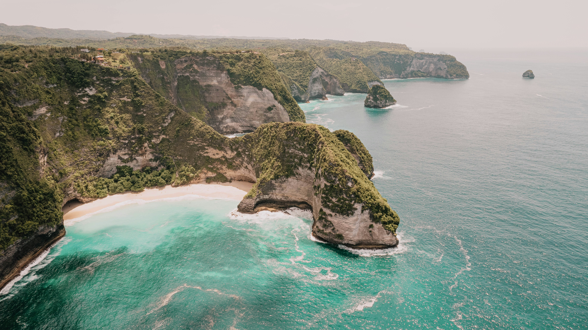

Discover the stunning landscapes and adventure opportunities in the Alps.
The Alps offer a wide range of activities, from skiing and snowboarding in winter to hiking and mountain biking in summer. It's a paradise for nature lovers and adventure seekers alike.
Safari in Kenya
Experience the wild beauty of Kenya's safaris and diverse wildlife.
Kenya's safaris are world-renowned for their abundant wildlife, including the Big Five: lions, leopards, rhinos, elephants, and buffalo. Explore the vast savannas and get up close with nature's most majestic creatures.

Beaches of Bali
Relax and rejuvenate on the serene beaches of Bali.
Bali is famous for its crystal-clear waters, white sandy beaches, and vibrant coral reefs. Whether you're looking for relaxation or water sports, Bali's beaches offer something for everyone.
Ancient Temples of Kyoto
Explore the rich history and culture of Kyoto's ancient temples.
Kyoto is home to some of Japan's most beautiful temples, including Kinkaku-ji, the Golden Pavilion, and Fushimi Inari-taisha. These temples offer a glimpse into Japan's ancient traditions and spiritual heritage.